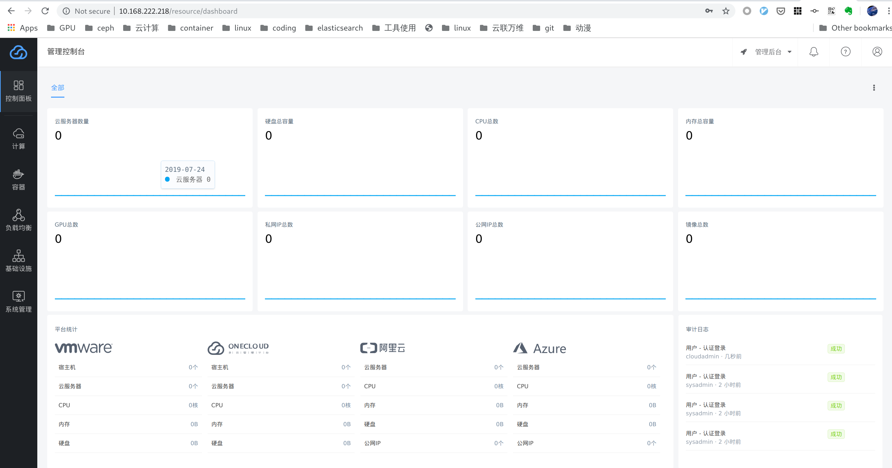

部署集群
环境准备
OneCloud 相关的组件运行在 kubernetes 之上，环境以及相关的软件依赖如下:
- 操作系统: Centos 7.x
- 数据库: mariadb (CentOS 7自带的版本：Ver 15.1 Distrib 5.5.56-MariaDB）
- docker: ce-18.09.1
- kubernetes: v1.14.3
安装配置 mariadb
mariadb 作为服务数据持久化的数据库，可以部署在其它节点或者使用单独维护的。下面假设还没有部署 mariadb，在控制节点上安装设置 mariadb。
为了方便运行维护，mariadb推荐打开两个参数设施：
- skip_name_resolve：取消域名解析
expire_logs_days=30：设置binlog的超时时间为30天，超过30天的binglog自动删除
$ MYSQL_PASSWD='your-sql-passwd' # 安装 mariadb $ yum install -y epel-release mariadb-server $ systemctl enable --now mariadb $ mysqladmin -u root password "$MYSQL_PASSWD" $ cat <<EOF >/etc/my.cnf [mysqld] datadir=/var/lib/mysql socket=/var/lib/mysql/mysql.sock # Disabling symbolic-links is recommended to prevent assorted security risks symbolic-links=0 # Settings user and group are ignored when systemd is used. # If you need to run mysqld under a different user or group, # customize your systemd unit file for mariadb according to the # instructions in http://fedoraproject.org/wiki/Systemd # skip domain name resolve skip_name_resolve # auto delete binlog older than 30 days expire_logs_days=30 [mysqld_safe] log-error=/var/log/mariadb/mariadb.log pid-file=/var/run/mariadb/mariadb.pid # # include all files from the config directory # !includedir /etc/my.cnf.d EOF $ mysql -uroot -p$MYSQL_PASSWD \ -e "GRANT ALL ON *.* to 'root'@'%' IDENTIFIED BY '$MYSQL_PASSWD' with grant option; FLUSH PRIVILEGES;"
安装配置 docker
安装 docker
$ yum install -y yum-utils
$ yum-config-manager --add-repo http://mirrors.aliyun.com/docker-ce/linux/centos/docker-ce.repo
$ yum install -y docker-ce-18.09.1 docker-ce-cli-18.09.1 containerd.io配置 docker
$ mkdir /etc/docker
$ cat <<EOF >/etc/docker/daemon.json
{
"bridge": "none",
"iptables": false,
"exec-opts":
[
"native.cgroupdriver=cgroupfs"
],
"data-root": "/opt/docker",
"live-restore": true,
"log-driver": "json-file",
"log-opts":
{
"max-size": "100m"
},
"registry-mirrors":
[
"https://lje6zxpk.mirror.aliyuncs.com",
"https://lms7sxqp.mirror.aliyuncs.com",
"https://registry.docker-cn.com"
],
"storage-driver": "overlay2"
}
EOF启动 docker
$ systemctl enable --now docker安装配置 kubelet
从 aliyun 的 yum 源安装 kubernetes 1.14.3，并设置 kubelet 开机自启动
$ cat <<EOF >/etc/yum.repos.d/kubernetes.repo
[kubernetes]
name=Kubernetes
baseurl=http://mirrors.aliyun.com/kubernetes/yum/repos/kubernetes-el7-x86_64
enabled=1
gpgcheck=0
repo_gpgcheck=0
gpgkey=http://mirrors.aliyun.com/kubernetes/yum/doc/yum-key.gpg http://mirrors.aliyun.com/kubernetes/yum/doc/rpm-package-key.gpg
EOF
$ yum install -y bridge-utils ipvsadm conntrack-tools jq kubelet-1.14.3-0 kubectl-1.14.3-0 kubeadm-1.14.3-0
$ systemctl enable kubelet安装完 kubernetes 相关的二进制后，还需要对系统做一些配置并启用 ipvs 作为 kube-proxy 内部的 service 负载均衡
# 禁用 swap
$ swapoff -a
# 如果设置了自动挂载 swap，需要去 /etc/fstab 里面注释掉挂载 swap 那一行
# 做一些 sysctl 的配置, kubernetes 要求
$ cat <<EOF > /etc/sysctl.d/bridge.conf
net.bridge.bridge-nf-call-iptables=1
net.bridge.bridge-nf-call-ip6tables=1
EOF
$ modprobe br_netfilter
$ cat <<EOF > /etc/sysctl.d/ip_forward.conf
net.ipv4.ip_forward=1
EOF
$ sysctl -p
# 配置并开启 ipvs
$ cat <<EOF > /etc/sysconfig/modules/ipvs.modules
#!/bin/bash
ipvs_modules="ip_vs ip_vs_lc ip_vs_wlc ip_vs_rr ip_vs_wrr ip_vs_lblc ip_vs_lblcr ip_vs_dh ip_vs_sh ip_vs_fo ip_vs_nq ip_vs_sed ip_vs_ftp nf_conntrack_ipv4"
for kernel_module in \${ipvs_modules}; do
/sbin/modinfo -F filename \${kernel_module} > /dev/null 2>&1
if [ $? -eq 0 ]; then
/sbin/modprobe \${kernel_module}
fi
done
EOF
$ chmod 755 /etc/sysconfig/modules/ipvs.modules && bash /etc/sysconfig/modules/ipvs.modules && lsmod | grep ip_vs部署集群
提示
如果要部署高可用集群，请先搭建负载均衡集群，参考 部署 HA 环境。
安装部署工具
先安装部署工具 ocadm 和云平台的命令行工具 climc:
# 安装 climc 云平台命令行工具
$ yum-config-manager --add-repo https://iso.yunion.cn/yumrepo-2.10/yunion.repo
$ yum install -y yunion-climc
# climc 在 /opt/yunion/bin 目录下，根据自己的需要加到 bash 或者 zsh 配置文件里面
$ echo 'export PATH=$PATH:/opt/yunion/bin' >> ~/.bashrc && source ~/.bashrc
# 安装 ocadm
$ wget https://github.com/yunionio/ocadm/releases/download/v0.0.1/ocadm -P /opt/yunion/bin
$ chmod a+x /opt/yunion/bin/ocadm部署 kubernetes 集群
接下来会现在当前节点启动 v1.14.3 的 kubernetes 服务，然后部署 OneCloud 控制节点相关的服务到 kubernetes 集群。
拉取必要的 docker 镜像
$ ocadm config images pull使用 ocadm 部署 kubernetes 集群
提示
如果要进行高可用部署，并已经搭建好了负载均衡集群，需要在
ocadm init命令加上--control-plane-endpoint <vip>:6443参数，告诉 kubernetes 集群前端的 LoadBalancer vip，之后生成的配置就会都用这个 vip 当做控制节点的入口。
# 假设 mariadb 部署在本地，如果是使用已有的数据库，请改变对应的 ip
$ MYSQL_HOST=$(ip route get 1 | awk '{print $NF;exit}')
# 如果是高可用部署，记得在设置 EXTRA_OPT=' --control-plane-endpoint 10.168.222.18:6443'
$ EXTRA_OPT=""
$ #EXTRA_OPT=' --control-plane-endpoint 10.168.222.18:6443'
# 开始部署 kubernetes 以及 onecloud 必要的控制服务，稍等 3 分钟左右，kubernetes 集群会部署完成
$ ocadm init --mysql-host $MYSQL_HOST --mysql-user root --mysql-password $MYSQL_PASSWD $EXTRA_OPT
...
Your Kubernetes and Onecloud control-plane has initialized successfully!
...提示
kubernetes 高可用部署需要 3 个节点，主要是 etcd 需要至少 3 个节点组成高可用集群。如果是高可用部署，请在另外两个节点执行
ocadm join --control-plane <vip>:6443部署控制服务，join 的另外两个节点会自动和当前的控制节点组成高可用集群。参考: 加入控制节点
kubernetes 集群部署完成后，通过以下命令来确保相关的 pod (容器) 都已经启动, 变成 running 的状态。
$ export KUBECONFIG=/etc/kubernetes/admin.conf
$ kubectl get pods --all-namespaces
NAMESPACE NAME READY STATUS RESTARTS AGE
kube-system calico-kube-controllers-648bb4447c-57gjb 1/1 Running 0 5h1m
kube-system calico-node-j89jg 1/1 Running 0 5h1m
kube-system coredns-69845f69f6-f6wnv 1/1 Running 0 5h1m
kube-system coredns-69845f69f6-sct6n 1/1 Running 0 5h1m
kube-system etcd-lzx-ocadm-test2 1/1 Running 0 5h
kube-system kube-apiserver-lzx-ocadm-test2 1/1 Running 0 5h
kube-system kube-controller-manager-lzx-ocadm-test2 1/1 Running 0 5h
kube-system kube-proxy-2fwgf 1/1 Running 0 5h1m
kube-system kube-scheduler-lzx-ocadm-test2 1/1 Running 0 5h
kube-system traefik-ingress-controller-qwkfb 1/1 Running 0 5h1m
local-path-storage local-path-provisioner-5978cff7b7-7h8df 1/1 Running 0 5h1m
onecloud onecloud-operator-6d4bddb8c4-tkjkh 1/1 Running 0 3h37m创建 onecloud 集群
当 kubernetes 集群部署完成后，就可以通过 ocadm cluster create 创建 onecloud 集群，该集群由 onecloud namespace 里面 onecloud-operator deployment 自动部署和维护。
# 创建集群
$ ocadm cluster create执行完 ocadm cluster create 命令后，onecloud-operator 会自动创建各个服务组件对应的 pod，等待一段时间后，确保 onecloud namespace 里面的 keystone, region 和 glance 等 pod 都处于 running 状态。
# 可以通过 watch 的方式查看各个服务 pod 的创建过程
$ kubectl get pods --namespace onecloud -w
# 当发现 web 相关的 pod 创建完成后，就可通过前端 web 界面访问云平台了
$ kubectl get pods --namespace onecloud | egrep 'apigateway|web'
default-apigateway-f657c55c8-9tzpm 2/2 Running 0 118m
default-web-7778d95cb8-2xv6n 1/1 Running 0 118m
default-webconsole-5855c8b64f-jtqwn 1/1 Running 0 119m等待 default-web- 相关的 pod 状态变为 Running 后，就可以通过访问 ‘https://本机IP:443’ 登入前端界面。
# 获取本机 IP
$ ip route get 1 | awk '{print $NF;exit}'
10.168.222.218
# 测试连通性
$ curl -k https://10.168.222.218用浏览器访问 ‘https://本机IP’ 会跳转到 web 界面，如果是第一次访问需要注册设置 cloudadmin 用户的密码，注册完成后登录的界面如下:

环境检查
当控制节点部署完成后，云平台的管理员认证信息由 ocadm cluster rcadmin 命令可以得到 , 这些认证信息在使用 climc 控制云平台资源时会用到。
# 获取连接 onecloud 集群的环境变量
$ ocadm cluster rcadmin
export OS_AUTH_URL=https://10.168.222.218:35357/v3
export OS_USERNAME=sysadmin
export OS_PASSWORD=3hV3qAhvxck84srk
export OS_PROJECT_NAME=system
export YUNION_INSECURE=true
export OS_REGION_NAME=region0
export OS_ENDPOINT_TYPE=publicURL提示
如果是高可用部署，这些 endpoint 的 public url 会是 vip，如果要在 kubernetes 集群外访问需要到 haproxy 节点上添加对应的 frontend 和 backend，其中frontend的端口对应 endpoint 里面的端口，backend 对应 3 个 controlplane node 的 ip 和对应端口。
测试链接
$ source <(ocadm cluster rcadmin)
$ climc endpoint-list
+----------------------------------+-----------+----------------------------------+----------------------------------+-----------+---------+
| ID | Region_ID | Service_ID | URL | Interface | Enabled |
+----------------------------------+-----------+----------------------------------+----------------------------------+-----------+---------+
| aa266549bbd743f4882fa1b1e98e409a | region0 | 106f7cf2410b4187879d4a44a737df0b | https://default-influxdb:8086 | internal | true |
| ba59f23951e6452984b9d2036d303ade | region0 | 106f7cf2410b4187879d4a44a737df0b | https://10.168.222.218:8086 | public | true |
| 5b2981d751624c6b86a757e30676c528 | region0 | ee302d70e261452282ca66c86f85f2f7 | https://default-webconsole:8899 | internal | true |
| 81c79509449f4f4581140adc030e5e57 | region0 | ee302d70e261452282ca66c86f85f2f7 | https://10.168.222.218:8899 | public | true |
...删除环境
如果安装过程中失败，或者想清理环境，可执行以下命令删除 kubernetes 集群。
$ ocadm reset --forceFeedback
Was this page helpful?
Glad to hear it! Please tell us how we can improve.
Sorry to hear that. Please tell us how we can improve.